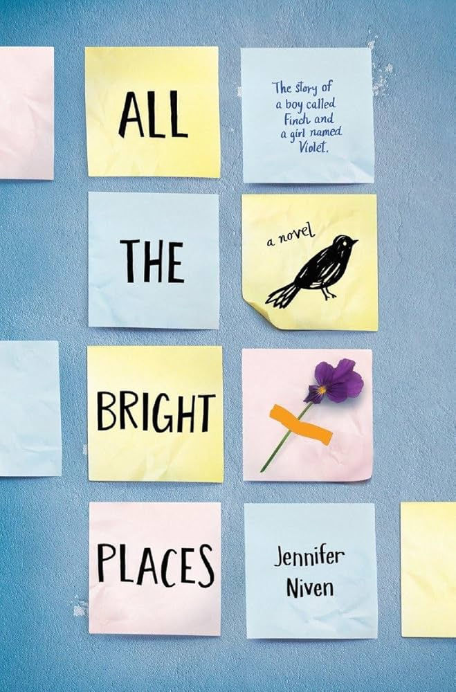

All the Bright Places

I would rate this book a 8/10. This book is filled with drama and romance. This book starts off with introducing the main character, Violet Markey. From the beginning, they go into detail about Violet's life and her struggles. We soon that she has a major fear of cars and is severely depressed after the death of her sister. She blames herself for her sister's death because she went to a party and needed a ride back home after she got into a fight with her boyfriend. On the way back home they ended up getting into a car crash which resulted in her sister's death. She falls into a deep depression and finds herself standing at the edge of the bridge where the accident happened. She is stopped by someone who thinks she is trying to jump. This person happens to be Theodore Finch. Theodore is in the same class as Violet. He is known as the weird kid who lashes out in class. After he recognizes her, she is mortified and tries to avoid him the next day at school. Theodore keeps trying to become friends with her. Eventually, she gives in and they become friends. The rest of the story the author takes us through their friendship as they become closer and closer. We see Violet's character change as she is now happier compared to when we first met her character. We get met with an unexpected twist when we go into Theodore's point of view. We get a deeper look into his life and why he is the way that he is. We now understand why he lashes out. Towards the end of the book we witness a very unexpected ending to the book. This book was also adapted into a movie which I watched and even left me devastated. I recommend you to read this book and watch the movie if you love drama and romance series and movies. If you like this book I definitely recommend reading the perks of being a wallflower!
Filed under Romance